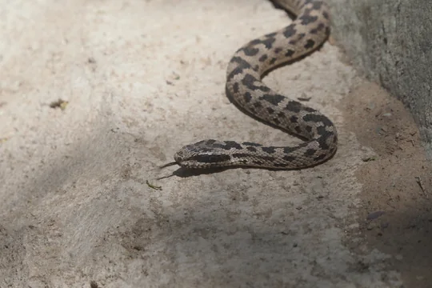
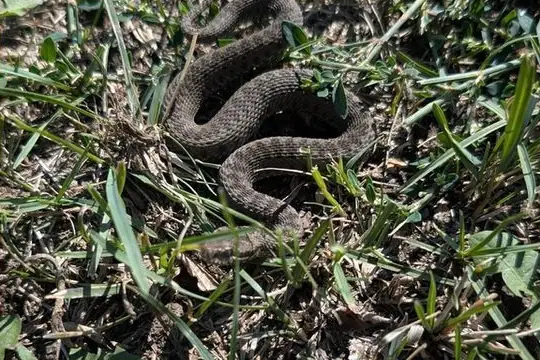
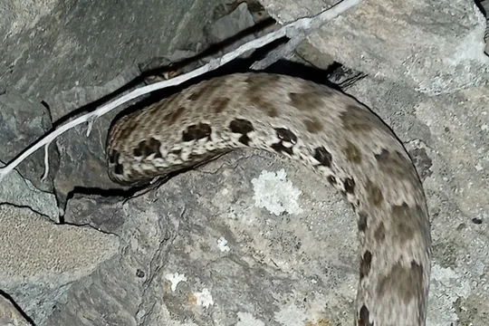
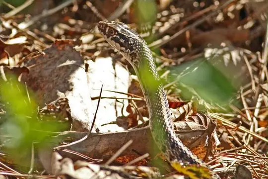
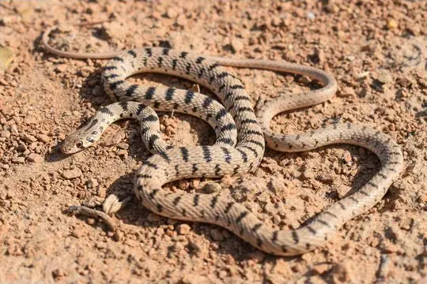
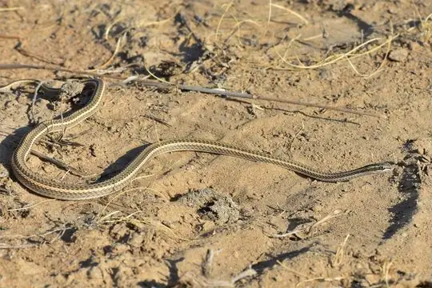

Snakes of Kazakhstan
13 snake species are recorded in Kazakhstan in SnakeList: 7 venomous and 6 non-venomous, from 4 families.
- 13species
- 7venomous
- 6non-venomous
- 4families
Species
Showing 13 species

Alashan pitviperGloydius cognatus
Altai ViperVipera altaica Dinnik's ViperVipera dinniki
Dinnik's ViperVipera dinniki Dione SnakeElaphe dione
Dione SnakeElaphe dione Dwarf Sand BoaEryx miliaris
Dwarf Sand BoaEryx miliaris East-Four-lined RatsnakeElaphe sauromates
East-Four-lined RatsnakeElaphe sauromates Halys Pit ViperGloydius halys
Halys Pit ViperGloydius halys
Karaganda pitviperGloydius caraganus
Slender RacerOrientocoluber spinalis
Spotted Desert RacerPlatyceps karelini Spotted Whip SnakeHemorrhois ravergieri
Spotted Whip SnakeHemorrhois ravergieri
Steppe Ribbon RacerPsammophis lineolatus Steppe ViperVipera renardi
Steppe ViperVipera renardi
No snakes in Kazakhstan match.
Kazakhstan’s snakes in numbers
- Families: Viperidae 6, Colubridae 5, Boidae 1, Psammophiidae 1.
- 1 is recorded in no other country in SnakeList: Altai Viper.